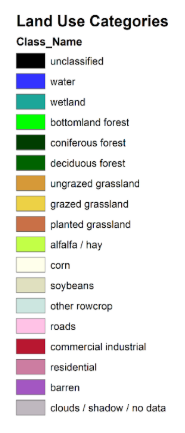

This page displays maps that show Story County, Iowa's land useage throughout time. I have collected this data from a previous project using python and ArcGIS.
Using the legend tab on the map, you are able to view land cover data for the entire state of Iowa in years 1985, 1990, 2002 and 2009. You are also able to view classes of change detection between years 1990-2002 and 1985-2002 as well as land cover persistance between years 1985-2002. Press the arrow to the right of the Land Cover layer to display the attatched sublayers.
